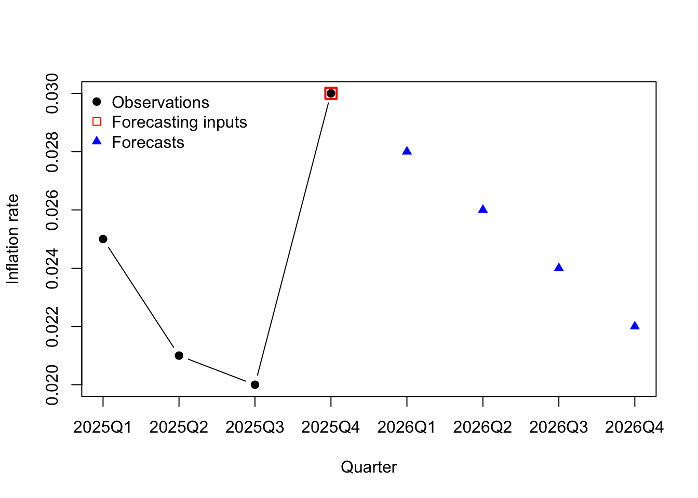

Code
y <- c(0.025, 0.021, 0.02, 0.03)
yhat <- c(0.8,0.6,0.4,0.2)*y[4] + c(0.2,0.4,0.6,0.8)*0.02
plot(1:4,y,xlim=c(1,8),pch=19,type='b',xlab='Quarter',ylab='Inflation rate',xaxt='n')
axis(side=1,at=1:8,labels=c(paste0('2025Q',1:4),paste0('2026Q',1:4)))
points(4,y[4],pch=0,cex=1.5,col='#ff0000',lwd=2)
points(5:8,yhat,pch=17,col='#0000ff')
legend(x='topleft',legend=c('Observations','Forecasting inputs','Forecasts'),bty='n',pch=c(19,0,17),col=c('#000000','#ff0000','#0000ff'))